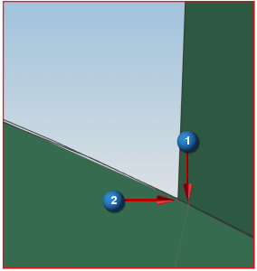
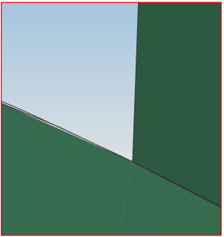

Fix element connections
Turn on node display to make it easier to select nodes.
|
|
|
-
Preferences→Model Display
-
Node
-
Marker Type
Asterisk

-
OK
Use the Element Modify Connectivity command to replace a node in one of the elements with a node from another element, allowing the two elements to share a node.
 Connectivity (Elements group)
Connectivity (Elements group)
-



-
 Delete Orphan Nodes
Delete Orphan Nodes -
OK
-
The first node replaces the second node and the elements now reflect the node change.
